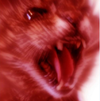
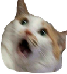
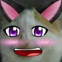

SSBracket
By Team Jaguar
A website to organize and find tournaments for the hit video game series Super Smash Brothers
This website is intended for people that want to easily host their own tournament or gamers looking for a tournament to join.
It's also a source of storing match data for players that want an easy way to track their own stats as well as compare themselves to friends
and professional players.
| Name | Bio | Major Responsibilies | Cat |
|---|---|---|---|
| Joseph Dieciedue | Joseph is a junior ECE major at UT with a primary technical core in Software Design and Implementation and an interest in Data Processing. | Designing and implementing a RESTful API that communicates with our AWS database. |  |
| Nick Duggar | Third-year electrical engineering student with nanotechnology as the primary tech core. | Managing hosting on AWS, designing and implementing a MySQL databse, and testing the Restful API and database. | |
| Takuma Fujiwara | Junior majoring in Electrical and Computer Engineering with Software Engineering and Design as the primary tech core and Communication/Signal Processing/Networks and Systems as the secondary tech core. | Researching and testing the feasibility of using software made by third party in our project. |  |
| Nick Requa | Senior electrical engineering student with Electronics and Integrated Circuits as the primary tech core. | Helping create the About Page and building UI tests with Selenium. |  |
| Tyler Takeyama | Third-year Electrical and Computer Engineering student with tech cores in Software Engineering and Data Science. | Managing the bracket page to allow dynamic bracket creation. | |
| Arthur Wojtyna | Arthur is a 3rd year Electrical and Computer Engineering student at UT with an interest in both software design and signal processing. He is part of the Robotics and Automation society and likes to grow alfalfa sprouts in his free time. | Creating homepage and leaderboard pages. Creating tests for pages using Selenium. |  |